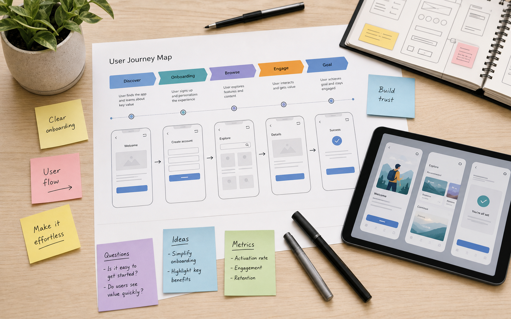

Tillbaka till design
Research + prototyp
Förenklat bokningsflöde
Ett case om att minska osäkerhet i ett flerstegsflöde och göra nästa steg tydligare för användaren.

- Roll
- UX research, wireframes, prototyp och användningstest.
- Metoder
- Journey mapping, problemanalys, low-fi prototyp, modererade tester.
- Resultat
- Ett kortare flöde, tydligare mikrocopy och färre beslutspunkter.
Utmaning
Användare behövde förstå flera val innan de kunde slutföra bokningen. Det skapade tvekan, avbrott och frågor sent i flödet.
Målet var att göra flödet mer guidande utan att ta bort användarens känsla av kontroll.
Process
Jag kartlade nuläget, markerade var användare tappade riktning och byggde wireframes som kunde testas snabbt.
- Identifierade kritiska beslutspunkter i användarresan.
- Skissade alternativa flöden med färre steg.
- Testade prototypen med fokus på förståelse och trygghet.
Lösning
Den nya lösningen prioriterade tydliga steg, sammanfattningar och mikrocopy som förklarade varför information behövdes.
Här kan du lägga in skärmbilder från dina riktiga wireframes, testresultat och före/efter-jämförelser.
Nästa projekt
Insikter för onboarding